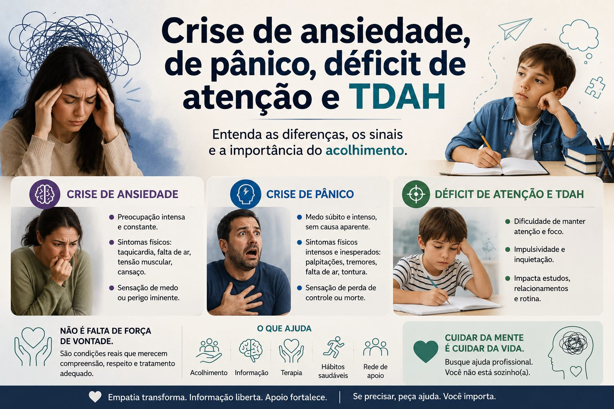

Saúde emocional
Crise de ansiedade, de pânico, déficit de atenção e TDAH

Esses termos aparecem muito no dia a dia e, embora possam estar relacionados, não significam a mesma coisa. Entender cada um ajuda a reconhecer sinais e buscar o cuidado adequado.
Crise de ansiedade
É um episódio intenso de ansiedade que pode surgir de forma repentina ou em situações de estresse. Os sintomas mais comuns incluem:
- Coração acelerado
- Falta de ar
- Tontura
- Sensação de aperto no peito
- Medo ou preocupação intensa
Nem sempre há um motivo claro, e a sensação costuma passar após alguns minutos, embora seja bastante desconfortável.
Crise do pânico
A crise do pânico é mais intensa e abrupta que a crise de ansiedade. Ela está associada ao Transtorno do Pânico e pode causar:
- Sensação de morte iminente
- Medo de perder o controle ou “enlouquecer”
- Falta de ar ou sensação de sufocamento
- Tremores e suor excessivo
- Palpitações muito fortes
A principal diferença é a intensidade e o nível de medo: na crise de pânico, a pessoa sente que algo muito grave está acontecendo naquele momento, mesmo sem perigo real.
Déficit de atenção
O déficit de atenção é um sintoma, não necessariamente um transtorno. Ele envolve:
- Dificuldade de manter o foco
- Distração frequente
- Problemas de organização
- Esquecimentos
Pode ser causado por diversos fatores, como estresse, ansiedade, cansaço, excesso de estímulos ou rotina desorganizada.
TDAH (Transtorno do Déficit de Atenção com Hiperatividade)
O Transtorno do Déficit de Atenção com Hiperatividade é um transtorno neurobiológico que afeta crianças e adultos. Seus principais sinais são:
- Desatenção constante
- Hiperatividade (em alguns casos)
- Impulsividade
Ele impacta estudos, trabalho e relacionamentos, mas pode ser controlado com acompanhamento adequado.
Relação entre eles
- A ansiedade pode causar falta de concentração.
- A crise do pânico é uma forma mais intensa de manifestação da ansiedade.
- O TDAH pode coexistir com ansiedade.
- O déficit de atenção pode ser temporário ou fazer parte de um quadro maior.
Em resumo
- Crise de ansiedade: episódio intenso de preocupação e sintomas físicos.
- Crise do pânico: crise mais extrema, com sensação de perigo iminente.
- Déficit de atenção: dificuldade de foco (pode ter várias causas).
- TDAH: transtorno persistente que afeta atenção e comportamento.
Se esses sinais são frequentes ou atrapalham sua rotina, procure orientação profissional com psicólogo ou psiquiatra para realizar diagnóstico e tratamento personalizado.
Leia também
5 estratégias eficazes de gerenciamento da ansiedade
Ansiedade não é fraqueza: pequenas escolhas diárias constroem mais equilíbrio.
Ler matériaO que é TDAH? Causas, sintomas e tratamento
Um transtorno real, não preguiça: como identificar e tratar, com um checklist rápido.
Ler matériaSuicídio: compreender para prevenir
Causas, sinais de alerta, espiritualidade e onde buscar ajuda. Você não está sozinho.
Ler matériaGostou desta matéria? Veja outras no blog, conheça nossas referências ou fale com a gente.